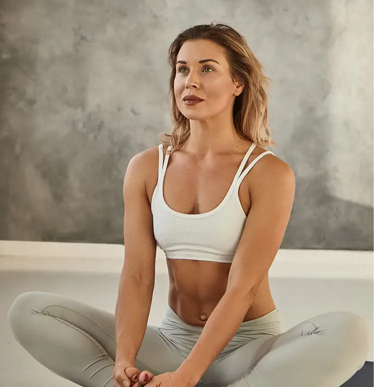
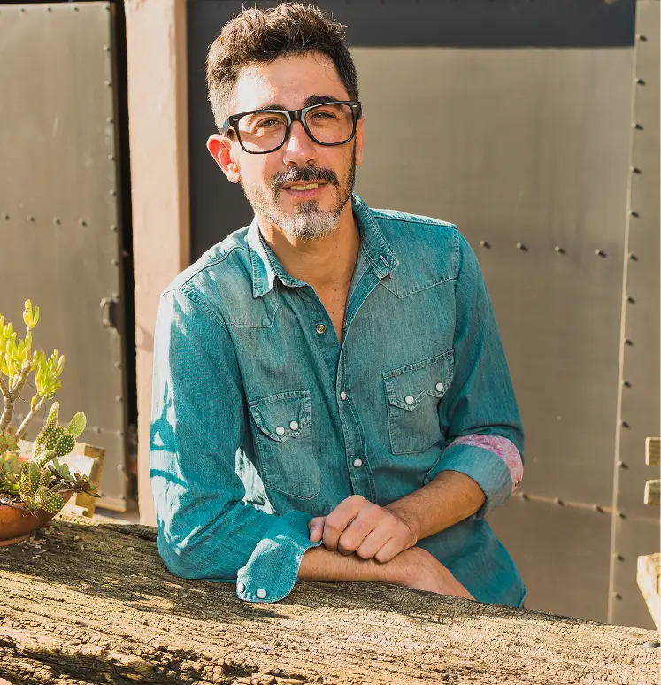
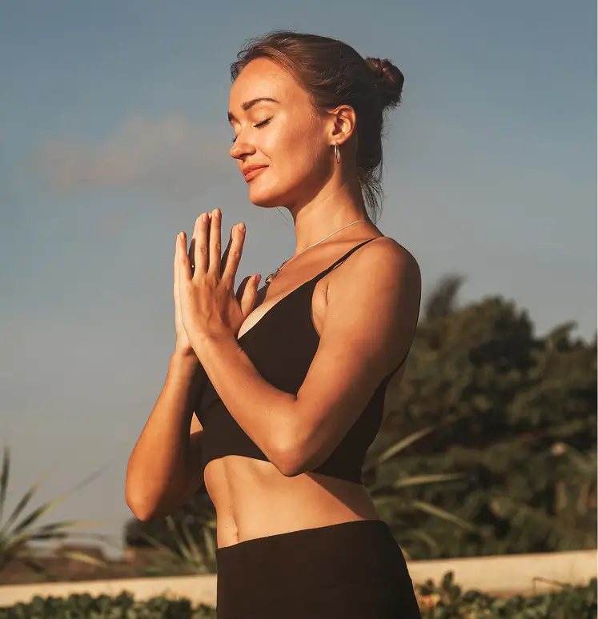
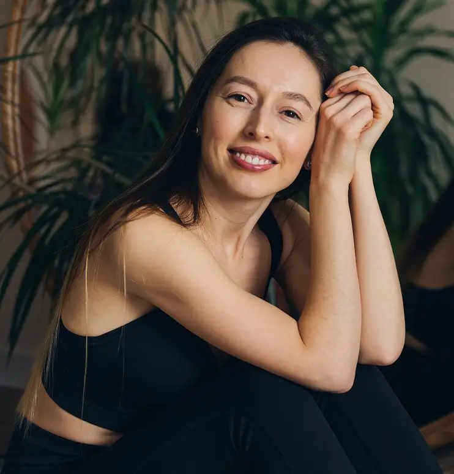
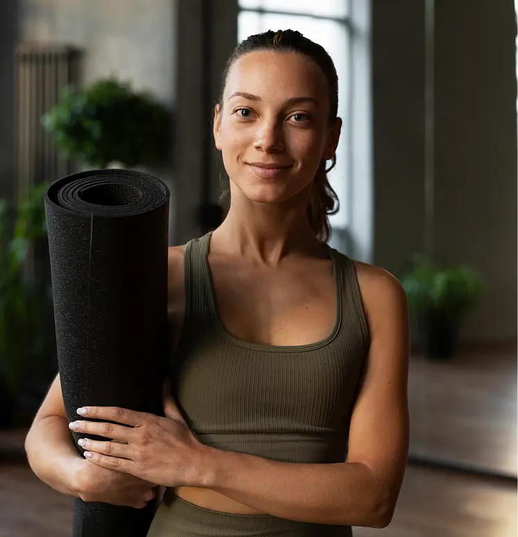
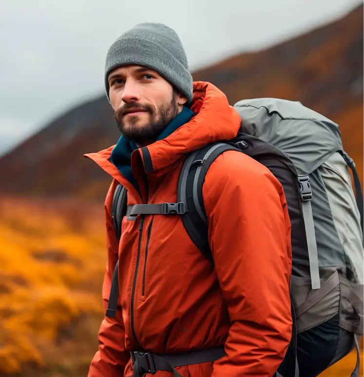

Coaches
Our coaches
Our fully remote lives, travels, and works all over the world.
From India to Indonesia, the Philippines to Portugal, Ukraine to
the US; and everywhere else in between.
From India to Indonesia, the Philippines to Portugal, Ukraine to
the US; and everywhere else in between.
Lauren Thompson
Yoga Couch
USA
Lauren Thompson
Yoga Couch
I work with yoga as a practical tool for improving mobility, balance, and body awareness. My
sessions focus on breath, alignment, and calm strength, without pressure or competition. I
support people who want to build a steady practice that fits real life and long-term
wellbeing.
My approach is grounded, structured, and accessible for different experience levels.
My approach is grounded, structured, and accessible for different experience levels.

Elena Rossi
Wellbeing & Balance Coach
Europe
Elena Rossi
Wellbeing & Balance Coach
I believe that health and fitness are built through sustainable lifestyle changes — and that
is exactly what I offer my clients.I focus on teaching real, whole-food nutrition, practical
meal preparation, effective resistance and cardiovascular training, and, most importantly,
consistency.
I believe that anyone can achieve their health and fitness goals with the right approach and support.
I believe that anyone can achieve their health and fitness goals with the right approach and support.

Matteo Conti
Transformational Retreat Guide
Africa
Matteo Conti
Transformational Retreat Guide
I guide retreats focused on personal clarity, reflection, and intentional change. My work
combines structured sessions, nature-based practices, and group processes. I support
participants in slowing down, reassessing priorities, and reconnecting with their inner
direction.
I value clarity, presence, and honest self-observation as tools for long-term change.
I value clarity, presence, and honest self-observation as tools for long-term change.
Clara Hoffmann
Holistic Wellness Coach
Asia
Clara Hoffmann
Holistic Wellness Coach
I work with people who want to improve their overall wellbeing by aligning mental, emotional,
and physical health. My approach is holistic and supportive, focusing on balance rather than
extremes.
I help clients build routines that support stability, energy, and self-awareness in daily life.
I help clients build routines that support stability, energy, and self-awareness in daily life.
Julien Lefèvre
Meditation Teacher
Europe
Julien Lefèvre
Meditation Teacher
I teach meditation as a practical skill for focus, emotional regulation, and mental clarity.
My sessions are simple and structured, suitable for both beginners and experienced
practitioners.
I focus on techniques that can be integrated into daily routines and professional life without isolating meditation from reality.
I focus on techniques that can be integrated into daily routines and professional life without isolating meditation from reality.
David Schneider
Nature Retreat Guide
Asia
David Schneider
Nature Retreat Guide
I design and guide retreats centered around nature, walking practices, and quiet observation.
My work uses natural environments as a space for reflection and mental reset. I support participants in reconnecting with simplicity, presence, and physical awareness through structured outdoor experiences.
My work uses natural environments as a space for reflection and mental reset. I support participants in reconnecting with simplicity, presence, and physical awareness through structured outdoor experiences.
Anna Kowalska
Conscious Movement Instructor
Europe
Anna Kowalska
Conscious Movement Instructor
I work with conscious movement practices that improve mobility, coordination, and body
awareness. My sessions help participants understand how they move and how movement affects
emotional state.
I focus on clarity, control, and ease, supporting sustainable physical health without strain.
I focus on clarity, control, and ease, supporting sustainable physical health without strain.

Thomas Weber
Silent Retreat Guide
USA
Thomas Weber
Silent Retreat Guide
I facilitate silent retreats focused on rest, mental clarity, and deep reflection. My work
creates a structured and safe environment where participants can step away from constant input
and reconnect with their inner processes. Silence is used as a practical tool for awareness
and insight.

Isabelle Martin
Stress-Relief Guide
Europe
Isabelle Martin
Stress-Relief Guide
I work with stress reduction through structured breathing practices, gentle movement, and
nervous system regulation. My sessions focus on restoring balance, improving emotional
stability, and reducing physical tension. I support people who experience long-term stress and
want practical, repeatable tools they can use in everyday life. My approach is calm, grounded,
and focused on sustainable recovery rather than quick fixes.

Sarah Johnson
Nutrition Specialist
Europe
Sarah Johnson
Nutrition Specialist
I support retreat participants with nutrition that is simple, nourishing, and adapted to real
needs. My work focuses on whole foods, energy balance, and practical eating habits that
support focus and recovery. I help people understand how nutrition affects their physical and
mental state, without strict rules or unnecessary restrictions, and with respect for
individual lifestyles.

Laura Sánchez
Yoga Couch
Europe
Laura Sánchez
Yoga Couch
I teach yoga as a consistent daily practice that supports strength, flexibility, and mental
clarity. My sessions are structured, calm, and focused on breath, alignment, and body
awareness. I work with people who want to integrate yoga into their routine in a realistic and
sustainable way, without pressure or performance-based expectations.

Michael Wilson
Meditation Coach
Europe
Michael Wilson
Meditation Coach
I work with meditation as a practical tool for emotional stability, focus, and
self-discipline. My approach is structured and accessible, helping people build a consistent
practice that fits into real life.
I support participants in developing awareness and resilience through techniques that can be applied both during retreats and in everyday situations.
I support participants in developing awareness and resilience through techniques that can be applied both during retreats and in everyday situations.
Our values
As a company we’ve been inspired to be a link in the chain of
happiness in the world. In order to manifest that inspiration,
we strive to embody these
happiness in the world. In order to manifest that inspiration,
we strive to embody these
01
Honesty
Having the courage to be
transparent in our feelings and
what we do
transparent in our feelings and
what we do
02
Self-responsibility
Taking responsibility for our
situation in life and not
engaging in the blame game
situation in life and not
engaging in the blame game
03
Kindness
Show compassion, empathy,
and patience to enhance
comfort and joy in life.
and patience to enhance
comfort and joy in life.
04
Dedication
Taking on the challenge of the
journey and focus upon the
vision we want to manifest
journey and focus upon the
vision we want to manifest
05
Service
Placing our gifts and talents at
the services of increasing the
loving consciousness of the
world
the services of increasing the
loving consciousness of the
world
06
Beauty
Expressing openly the core
essence that inhabits each
one of us
essence that inhabits each
one of us
07
Human Wellbeing
In the end, we are all in the
business of human wellbeing
business of human wellbeing
08
Travel & track progress
Use VITA Journal to reflect
and rebook.
and rebook.